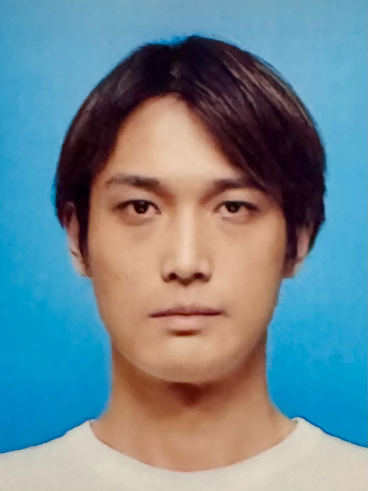

DRHeC：用 RGB 梯度做可微渲染手眼标定
DRHeC: Differentiable Rendering for Hand-Eye Calibration with RGB-Based Gradients
把可微渲染标定的监督从“二值掩码”换成“RGB 梯度 + 软质心 + 软面积”，并用 θ=0.25 的两段式策略（先冻旋转只调平移、后放开精修）；UR5e 抓取 88.9%（EasyHeC 42.6%）、插入 57.4%（EasyHeC 9.3%），DENSO VS060 上 77.8%/77.8%，且 1% 几何失配就让平均平移误差从 7.41 mm 涨到 21.92 mm。
success rate
mismatch sensitivity
runtime
作者、单位与技术谱系 · Research context
作者与单位
研究脉络
- EasyHeC（二值掩码可微渲染标定）方法基座关系：本篇以 EasyHeC 为直接基线与问题出发点：其监督只有二值掩码，缺颜色与内部轮廓信息，导致精度受限且可能因投影对称落入歧义[论文摘要、Discussion 与 Simulation 正文]
- IPE（基于距离图掩码损失的可微渲染标定）上游工作关系：同为可微渲染标定路线，其距离图损失带来非光滑梯度与非凸构型下的方向不一致，本篇以软质心项替代并与之对比[论文 Method 与 Simulation 正文]
- CycleGAN 与几何保持的图像翻译上游工作关系：I2IT 模块以 CycleGAN 为骨架，新增掩码损失以在翻译中保持几何一致性，并对比 CUT、GeoMaskGAN 等翻译方案[论文 Method 与 I2IT 结果正文]
- RGB 梯度 + 掩码质心/面积 + 两段式冻结本篇推进关系：在既有可微渲染标定上新增颜色梯度与全局几何矩，并用质心损失阈值控制旋转梯度的开放时机[论文 Method、Ablation 与 Simulation 正文]
合作网络
- 东京大学精密工程系 ↔ RACE 研究中心（同校跨部门共同署名）Xiaotian Zhang（精密工程系） → Yusheng Wang、Jun Ota（RACE）关系：同一论文的共同署名（同校不同单位标注）[arXiv abs 页面（作者块与致谢）]
- 东京大学 ↔ DENSO WAVE（产学研共同署名与硬件支持）东京大学（精密工程系 / RACE） → DENSO WAVE INCORPORATED关系：跨机构共同署名；论文真实实验中 DENSO VS060 机器人由该公司提供[arXiv abs 页面（作者块）与论文 DENSO 实验一节]
作者、单位与产研关系全部来自论文作者块与致谢行；论文还给出发表在 IEEE Transactions on Instrumentation and Measurement（vol. 75, Art. no. 7505816, pp. 1-16, 2026；DOI 10.1109/TIM.2026.3712913）的版权信息，可作为正式引用来源。脉络条目按“方法基座 / 上游工作 / 本篇推进”组织，被引文献的完整条目未在本次取得的源文件中核对（LaTeX 包内不含 .bbl）。
方法本质拆解 · What actually changed
是不是微调？
标定本身不训练网络，是逐帧的测试时优化：手眼位姿 ^{c}T_{b} 被当作待优化变量，用 Adam 迭代 2000 次；但流程开头有一个确实被训练的网络——真→仿图像翻译模块 I2IT，以 CycleGAN 为基座额外加掩码损失（λ_mask=1.0），训练 400 个 epoch（前 200 常数学习率、其后线性衰减）。I2IT 训练完成后参数固定，标定结果不回灌给它，因此不存在 I2IT 与标定之间的递归反馈。
有没有额外约束？
约束落在损失与被优化变量上。损失是三项加权：RGB 项（渲染图与翻译图的 MSE）、掩码软质心距离项、掩码软面积项，权重 λ_rgb=1.0、λ_centroid=0.01、λ_area=0.0001；两项几何损失都刻意做成光滑可导（软max 加权质心、sigmoid 求和面积），以避免硬掩码边缘造成的不可导。优化过程再加一条过程约束：当质心损失大于阈值 0.25 时，三个欧拉角旋转分量的梯度被置零，只允许平移更新，落回阈值以下才放开旋转。此外假设相机与机器人已良好标定、光照稳定，且机器人关节构型已知。
推理/后端到底做了什么？
推理即标定：输入一张观测图与一个初始手眼位姿，先把观测图经训练好的 I2IT 翻成仿真风格图，再在 nvdiffrast 里按已知关节构型渲染当前位姿下的 RGB 图与掩码，计算三项损失并反向传播更新位姿，迭代至多 2000 次，输出优化后的位姿。掩码来自 SAM 加必要的人工修正，论文明确这一步只是准备数据、不属于标定优化本身，可替换为其他自动分割方法而不改变框架。没有全局平差、没有多帧联合优化、也不必使用标记，标定一次后位姿可复用于后续操作任务。
方法本质是什么？
本质是给一个欠约束的单帧优化补上“局部细节 + 全局几何”两类梯度：RGB 梯度提供密集的外观线索，帮助区分二值掩码无法区分的构型（例如投影对称下 180° 差别的姿态）；软质心与软面积提供全局几何方向，使初值误差较大时优化仍有稳定的下降方向，并用分段冻结避免不可靠的旋转梯度把解带跑。它没有做的是：不估计不确定性、不做多帧/多视角联合标定、不对光照或遮挡建模，也不保证单帧可辨识性——论文明确把可辨识性分析留作未做的内容。
输入=单张（或多张）机器人观测图 + 已知关节构型 + 初始手眼位姿；改变的位置=被优化的手眼外参 ^{c}T_{b}（以及预先训练好的 I2IT 翻译网络）；动作=真→仿图像翻译 + nvdiffrast 渲染 + RGB/软质心/软面积三项损失、按质心阈值分段冻结旋转的 Adam 迭代；直接效果=UR5e 抓取 88.9% 与插入 57.4%（EasyHeC 42.6%/9.3%），并可解释为“观测判别性不足”问题的缓解。

桥接价值Bridge
桥接价值
这篇论文把“标定精度不够”重新表述成“观测本身不够有判别性”：当机器人构型与视角使不同位姿产生几乎相同的二值掩码时（论文给出 Joint 1 相差 180° 的两个构型掩码近乎一致的例子），梯度里就没有把两者分开的方向，优化自然会发散或落进局部极小。对做状态估计与标定的读者，这是一个干净、可复现的“观测退化 → 优化失败”案例，且给出了量化边界：把仿真模型的几何尺度做 0/1/3/5% 的各向异性扰动，平均平移误差随之变成 7.41/21.92/53.05/86.13 mm。它同时说明“加入信息量更大的观测量（颜色 + 全局几何矩）”与“按损失量级分阶段放开变量”是两条互补的稳定化手段。
方法与模块Method
方法摘要
流程分两段。第一段是几何保持的真→仿图像翻译（I2IT）：以 CycleGAN 为基座，额外加一项掩码损失约束生成图与输入图的二值掩码一致，并用一个“仅用于构造训练对”的预标定做粗对齐；网络训练 400 个 epoch（前 200 常数学习率，之后线性衰减）。第二段是 RGB 可微渲染标定：用 nvdiffrast 渲染仿真机器人，用 SAM 得到机器人的初始掩码（必要时人工修正提示与掩码），在已知关节构型下优化手眼位姿，损失为 RGB 项 MSE、掩码软质心距离项与掩码软面积项三项加权和；软质心用灰度图的 softmax 加权坐标（温度 τ=1.0），软面积用 sigmoid 求和的近似，因此两项对像素变化都是光滑可导的。优化用 Adam、固定学习率 0.002、最多 2000 次迭代，权重 λ_rgb=1.0、λ_centroid=0.01、λ_area=0.0001；两段式策略：当质心损失大于阈值 0.25 时冻结三个欧拉角旋转的梯度（只更新平移），落回阈值以下再解冻做完整精修。
可迁移模块
第一，按损失量级决定“冻结哪些变量”的分段优化：早期只调平移、后期才放开旋转，这一改动极小却直接针对初值误差大时旋转梯度不可靠的问题，可以原样搬到我们的外参标定或在线标定流程里做 A/B。第二，把低维全局矩（质心、面积）作为辅助损失，抑制纯像素级损失在自遮挡/对称结构下的梯度不一致，这与我们在点云或影像配准里加全局一阶/二阶矩约束的思路同源。第三，失配灵敏度实验模板（对仿真模型施加不同尺度的各向异性扰动，报告标定误差如何随之增长）可以直接照抄，用来量化我们对仿真模型/先验地图误差的敏感度。第四，I2IT 的“掩码损失 + 粗对齐预处理”给出了跨域图像调整时的几何一致性做法，且论文明确把该步骤与最终优化解耦（标定结果不回灌训练），这种“先对齐外观、再优化几何、不形成递归反馈”的结构值得沿用。

证据Evidence
关键证据与数字
真机 UR5e（Basler acA2440-20gc + Kowa LM8JC10M，相机距机器人约 2 m，RTX 4090）：抓取成功率 DRHeC 88.9%、EasyHeC 42.6%（+46.3 pt），插入成功率 DRHeC 57.4%、EasyHeC 9.3%（+48.1 pt）；标记法基线在同一 setup 下抓取/插入分别为 Tsai 5.6%/5.6%、Daniilidis 9.3%/9.3%、Single3D（闭式）3.7%/1.8%、Wang 等 24.1%/16.7%，而 Single3D（迭代）取得最高 96.3%/81.5%。DENSO VS060（近全白、颜色信息极少）：DRHeC 抓取/插入 77.8%/77.8%，分别比 EasyHeC 高 22.2 与 44.5 pt。真实 Baxter 数据集的 2D PCK：DRHeC 在 20px 阈值 0.65、50px 起即 1.00，而 EasyHeC 0.35、EasyHeC++ 0.50。合成 UR5e 数据集（每档扰动 200 样本）：高扰动档 DRHeC 成功率 99.5%、平均平移误差 0.1495 m、平均旋转误差 0.2187 rad，对比 EasyHeC 71.0%/0.6572 m、RGB-only 11.0%/1.5204 m；中扰动档 DRHeC 99.0% vs EasyHeC 91.5%。单次标定 2000 次迭代约 14 s（7.19 s/1000 iter），与 EasyHeC（7.18 s）相当，明显快于 IPE（78.25 s）。几何失配灵敏度：对 UR5e 模型施加 0/1/3/5% 各向异性高斯尺度扰动（20 组配对试验），平均平移误差 7.41/21.92/53.05/86.13 mm，平均旋转误差 0.0197/0.0190/0.0287/0.0396 rad。
边界与下一步Limits & Next Step
边界与风险
作者明确承认：(1) 方法假设稳定的室内光照，不处理极端亮度或遮挡，遮挡会破坏掩码一致性并沿可微渲染链路传导到最终标定；(2) I2IT 是机器人专用的，换机器人需要重训，且真实/仿真模型的颜色与纹理差异、掩码提取误差会留下残余错位，单帧优化仍可能落入局部极小；(3) 质心项可能不完全对应物体真实中心，作者因此加面积项来稳定 z 向平移，并在讨论中把“投影对称、严重自遮挡、可见结构不足、外观变化弱”列为观测退化条件，同时说明论文没有做形式化的可辨识性分析，也没有给出退化情形的定量容差边界。待核验项：论文未报告绝对真值误差（只用 Single3D 迭代解作参考解，并非真值），也没有在强光照变化、外部遮挡、分割失败与刻意外观变化下做系统评估；1% 几何失配即让平移误差上升约 2 倍这一结论来自仿真渲染扰动，论文未给出真实模型几何误差的量级作为对照。
下一步实验
第一，把“观测判别性”做成可控实验：构造投影对称或弱纹理的标定场景，逐步降低观测判别性，记录外参误差、迭代收敛曲线与失败率，验证“误差上升是否先于发散出现”，这能为我们判断某批标定数据是否可用提供依据。第二，照抄 0/1/3/5% 几何失配的灵敏度实验，作为我们评估仿真模型与先验地图误差传播的标准模板，并补上真实系统的几何误差量级。第三，把两段式冻结策略作为最小改动接进我们现有的外参精化流程，在同一个数据集上对比“全程联合优化”与“先平移后旋转”的收敛成功率与最终误差；第四，评我们是否需要类似的全局矩约束（质心/面积）来抑制局部极小，特别是在低纹理或结构对称的观测上做 A/B。